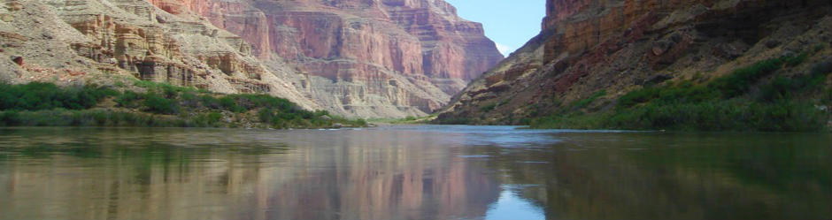
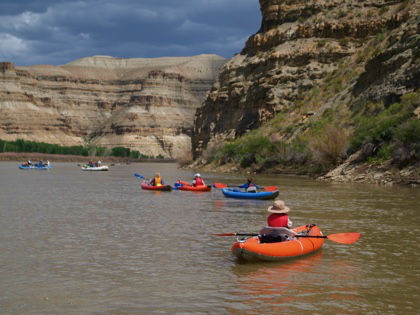
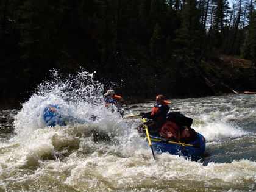

we run rivers to relax...
we believe that there is something special about relaxing on a calm river. that is why we subscribe to the DRY OAR philosophy of boating. keeping your oars dry, for us, means taking the time to admire the beauty that surrounds the rivers we love.


...and run whitewater for the rush!
just because we keep our oars dry, doesn't mean we don't also like rapids. (opposites in all things after all). we believe that the tenseness that comes when you are looking down the tongue of a big string of rapids makes you appreciate the calm and beautiful water that always follows even more.
come run with us.
we invite you to come relax or run with us on one of the amazing rivers we visit. check out our trips and let us know which one best suits you. we're waiting to hear from you!